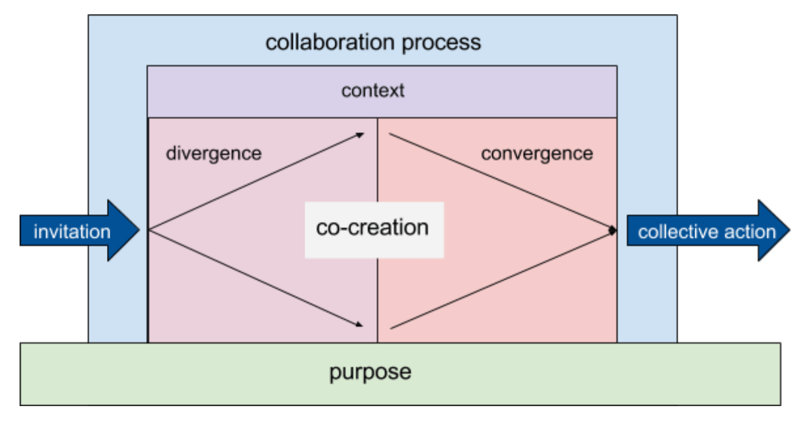

Underway
Where are we on the Map?
People feel more confident and better held if they can orient themselves on a timeline or agenda. They want to know what they’re doing now, what’s coming up, and to be reminded of what they’ve already done. Understanding the overall shape of the process helps people understand how to contribute effectively.
For example if they can see there’s a Q&A section later, they’ll be more willing to hold their questions during a presentation. If it’s clear that there’s a divergent phase and then a convergent phase, people will hold back from jumping to solutions too soon. People need to know what kind of input they are being asked for, and when.
Mapping the process well enough to communicate it also challenges facilitators to fully think through the journey, and helps them make sure each part of the process has a purpose that builds a cohesive whole. A well-facilitated experience follows a logical progression.
On Loomio
- A Loomio decision already follows a basic logical progression (which is why it works): Gather (open/invite), Discuss (divergent), Propose (convergent), Decide and Act (conclude).
- Many Loomio users are employing the tool as part of explicitly mapped experiences, such as a multi-stage consultation process.
- We offer some tools of facilitators to help “reveal the map” to users, such as the group description field, and proposal deadlines. These can be proactively leveraged to increase context for participants.
The Art of Noticing
Noticing is probably the most critical facilitation skill of all. The facilitator uses noticing to figure out what interventions or responses are needed, how to invite the right contributions, and to help the group notice itself. The value of facilitation is having someone paying attention and acting on what they notice, while others may be focused on specific content or their own agendas.
Effective noticing is a combination of good informational inputs, and sensitivity and skill to interpret them. Many facilitators talk about “reading” a room: emotional reactions, tensions, power dynamics. Facilitators need effective information signalling systems.
On Loomio
- Many current features assist with noticing — the biggest one is probably watching how the pie is shaping up in a proposal.
- The software notices some things: who has and has not yet participated, what topics are being raised, who has and has not accepted their group invitation, etc.
- On Loomio, a single facilitator can read across dozens of discussions at the same time, see clearly what’s being shared, and act accordingly.
- Talking online can make the implicit explicit, and therefore easier to notice.
- Communicating in writing can be very good for naming what’s being noticed and why a certain action is being taken in response. For example, you can quote someone’s exact words and reflect back what’s revealed by them. Or you can do the same thing at the level of a whole discussion, picking out a range of quotes and noticing themes or emerging conflicts.
- Noticing is much easier when you slow things down, which is one of Loomio’s great advantages — asynchronous communication you can read at any pace. It also makes it possible to notice across time, referring directly to past discussions.
- Because you can have simultaneous discussions, it’s possible to have a layer of “meta” discussion (aka “blue hat”, aka discussion about the discussion) at the same time as progressing the main discussions. So you can collectively have a space to practice noticing without slowing down the process.
Hearing Diverse Voices
In our society, multiple layers of history, power dynamics, culture, and psychology conspire to amplify certain voices and suppress others. This plays out at every level of experience, from our innermost subconscious beliefs to our political system and laws.
But the best ideas do not always come from the loudest voices, and the role of facilitation is to counteract these biases. It’s important to be aware of the dynamics we are collectively grappling with if our goals are social justice, group effectiveness, and high quality decision making.
If you want to innovate, you have to make space for different points of view — luckily, this is also what you need to do if you want a team where everyone is empowered. All kinds of cultural and technical factors conspire to privilege some voices at the expense of others. There are many practices you can implement to systematically challenge that bias, but just being aware of it is a good starting point. — Richard Bartlett
Our lived human experience is to inhabit a singular consciousness, so humans tend to forget that others experience the world differently. Even within a seemingly homogenous group, there is incredible diversity — perspectives, pace, preferences. Internalising this truth — that others are different from myself — is a central personal growth challenge.
There is no such thing as one size fits all. Any mode of interacting enhances some voices and quiets others, or emphasises different tendencies within an individual. So, it’s necessary to employ a range of approaches to invite the best from multiple diverse voices.
Check you’re catering to different learning styles. One simple way to check is with the Head, Heart, Hands metaphor. People who learn with their Head need facts and detailed information. A Heart learner thrives off stories. They need an emotional connection to the work. Learning with the Hands is all about doing stuff and getting active. — Silvia Zuur
One of the best approaches to bringing out and weaving together diverse voices is to invite diverse modes of interaction, which will serve different needs and preferences, and level the communication playing field.
Some classic design building blocks to address communication diversity in collaborative communication:
- Group size — individual reflection, pairs, small group, large group, one-to-one, one-to-many, many-to-many.
- Medium of expression — writing, drawing, video, singing, dance, flowcharts, equations, symbols, stories, tears, laughter, debate, etc.
- Discussion protocols — rounds (hear from each person once before moving on), rate limiting (you can only speak again after two others have spoken), talking stick (only speak when you have the stick — no interrupting), time-limited contributions (you can talk for 1 minute only), time-unlimited contributions (you can hold the floor indefinitely and everyone will deeply listen), tracking contributions (how much have women vs men spoken, etc), holding periods of silence between speakers (for processing and reflection).
- Embrace silence Silence is only awkward if you let it be awkward. Silence is a chance for people to think. — Silvia Zuur
On Loomio
- The design of Loomio has always been about “hearing all voices”, including people who aren’t able to be there in person, are quieter, are busy, etc.
- In text, every voice is more or less the same “volume” and “speed”. Written asynchronous communication offers a kind of leveling of the field.
- The proposal feature is essentially a “round”, assisting groups to facilitate each individual person having their say (if they want to) on an equal basis.
- Loomio enables multi-media (links, videos, images, diagrams, supporting evidence), which serve various communication styles.
- Loomio itself is pretty basic, but with active facilitation and group maturity, it is possible to employ discussion protocols “manually” using cultural norms or agreed rules (eg, a discussion where everyone only posts once until everyone else has participated).
- Loomio provides flexible tools for small and large group interaction, using parent groups and subgroups. Some large consultation processes have involved multiple smaller groups which are then synthesised into a larger outcome.
- People who want time for individual reflection can take time out and process their thoughts, and then come back and share a longer comment or link to a document. This is a “self-selecting” example of creating interplay between individual and group communication.
- Loomio accessibility features and multi-lingual translations make it possible for people with very different needs to participate as equals in one discussion. This is a key example of how technology can enable equitable participation in a way that’s nearly impossible in person.
- If someone is contributing more than their share (talking too much), it’s technically possible to just scroll on by (whereas in person this behaviour can totally dominate the interaction). However, people posting “walls of text” can still be detrimental to a balanced Loomio discussion.
Counter Cognitive Bias
Human brains have evolved over millions of years to balance quick, efficient “good enough” thinking with slow, expensive, deep analysis. This allows us to use instincts, heuristics, and generalisations as cheap and fast solutions most of the time, and to engage deep analysis when needed.
But sometimes we get it wrong. In fact, there are well-known “bugs” in the human cognition program, which can keep people from making the best decisions. This is further complicated in group situations. We need to be aware of these dynamics.
There is a huge range of cognitive biases (this list is really worth a read), all of which have potential impacts on decision making and collaboration. Facilitation can be an important tool to deal with them, to raise awareness of their existence, encourage proactive choices about them. For example, asking when is it more important to move quickly and when is it more important to be accurate.
One powerful tool to counter cognitive bias and increase quality of decisions is structured processes and communication. The challenge of following a process instead of the “path of least resistance” can help highlight thinking errors and bias. Facilitators sometimes push for things that feel challenging or trigger resistance, precisely because brains are being asked to step out of familiar patterns. Discipline in this area can help groups achieve their deeper goals, which can be worth some temporary discomfort.
Some examples of processes that can help mitigate cognitive bias:
- De Bono’s Hats: different colored hats participants can wear (metaphorically) to step outside their own opinions and try on different modes of thinking.
- Checklists: thinking “ruts” can cause us to miss even obvious things (especially in areas we’re very familiar with), so a checklist can weed out errors.
- The Five Why’s: only asking why once or twice can mislead you into thinking you’ve reached the conclusion before you get to the root level of the issue. Asking five times tends to get to the bottom of it.
- Mental models: exercises like SWOT analysis, the business model canvas, or any number of countless other structured information gathering exercises can guide you to cleaner analysis and reveal assumptions.
On Loomio
- Diverse information and inputs can disrupt assumptions or bias. This is built into Loomio’s basic design: by enabling more voices to contribute to a discussion on a more equitable basis, you have a chance to escape “groupthink”.
- Loomio gives participants the ability to dissent constructively. Safe and valued dissent is essential for a culture of critical thinking.
- Communicating asynchronously in writing slows conversation down and lets it be more carefully considered, giving people a chance to think more carefully and avoid cognitive errors.
- Loomio invites people into a semi-structured process that leads to more considered decision making. Loomio can be used for a huge range of different processes, but simply having some structure in a discussion enables other possibilities.
Balancing Divergent & Convergent
The “diamond” of divergence and convergence is a conversational shape. It expands outward at first — opening up space for ideas, information, and different perspectives — then begins to come to a point. The right timing for this shift is key for effective facilitation of action-oriented, productive, collaborative discussions.

If divergence is missed out or cut off too early, there will be a lack of information to work with, people may not feel heard, and great ideas will be left unsaid. If convergence is missed out or left too late, discussion can continue indefinitely without reaching an actionable conclusion, burning participants energy and failing to achieve results.
Each sub-phase of the larger process also requires awareness of the right timing and intervention. Divergence consists of introduction, clarification, ideation. Convergence consists of analysis, conclusion, commitment. Some discussions succeed with only a vague nod toward the diamond, while others are served by a meticulous breakdown of each phase and sub-phase.
Within a group, different individuals will usually tend to prefer one mode or the other, and the group as a whole will have collective tendencies. Imbalance looks like too much blue sky thinking, or jumping to solutions. Facilitation can help each person and the group as a whole spend the right amount of energy on the different modes.
On Loomio
- The core Loomio process does an excellent job of guiding groups to touch on each phase of the process, with the discussion being divergent and proposals being convergent. Awareness of the diamond was a big inspiration for the original design of the Loomio process.
- Loomio helps groups to use the diamond in dynamic ways, such as when an attempt to converge (a proposal) ends up becoming a deeper level of divergence (disagreement), revealing or clarifying information to support an even better convergence (iterated proposal).
- Some of Loomio’s basic features go a long way toward supporting each mode, such as notifications to group members when a new discussion is starting (prompting divergent contribution), and deadlines on proposals (prompting participation in convergence).
- Loomio users are already able to use the existing feature set to facilitate convergence — namely starting a proposal. Good use of proposals is one of the most obvious symptoms of an effective Loomio group, and simply advising users to start more proposals unblocks many groups who are having issues.
Working with Scope
Successful collaboration often depends on biting off the right size pieces in the right order.
You can apply a “project management” mindset to facilitation, designing for questions like:
- What are the dependencies (what’s the critical path, which things need to be done first to enable other things)?
- What are the most important bits to focus on? What can be left out?
- What is an achievable scope to tackle at a given time to get to a useful place with the time, energy, and information available?
It’s important not to try to “boil the ocean”, and instead break things down into manageable chunks. You can build toward a bigger outcome in a series of smaller pieces. It’s often better to achieve something small but useful, than to fail to reach any conclusions. It’s also possible to get too bogged down in details and fail to hit the bigger issues.
In a collaboration, no one knows exactly what will emerge, so scope must evolve with the discussion. Whether branching out at a given moment is a distraction or an evolution is a judgement call. Too much rigidity and too much flexibility can both be damaging. Often times it’s not about whether something is relevant or not, but a question of sequence and timing in terms of what will be most constructive.
If you plan a session with multiple, interlinked parts – each one building on the other, and all leading to a life-changing, mind-exploding conclusion – and you can pull it off, then that’s amazing. But more often than not, a complicated session will go over-time and may not hit the participant’s wants and needs. - Silvia Zuur
A series of small yes’s
Lumping too many conversations together simply creates confusion. Frustrated groups are often helped by breaking things down. If an issue seems hopeless, complex or conflicted, it can be possible to separate out individual questions and reach consensus on them, starting with the easiest things to agree. Then when it comes to points of disagreement, you can pare it down to only the crux of the issues and work on them in a focused way.
On Loomio
- Topic-based discussion threads are a powerful tool for effective scope — even more than face-to-face conversation, Loomio discussions can be usefully delineated to encourage focus on a specific question, while other aspects can be addressed simultaneously in other threads.
- We often see users making facilitation interventions like “That’s out of the scope of this topic, but why don’t you start a new discussion about it?”
- The act of creating a Loomio group helps define who are we and what are we here to discuss. This helps participants manage scope.
- The sequential proposals design of Loomio is very good for a “series of small yess’s” approach — you can build small agreements while maintaining context in a single discussion thread, and build on the history of previous proposals.
- Asynchronous online communication can allow some people to go way out of scope without holding up others. They can simply start a new discussion or subgroup and go as deep and long as they want, while the main scope of the group is maintained.
- The discussion context box and group description are spaces to define the scope of a conversation or group, respectively.
Pacing & Timing
A productive conversation has a rhythm. The right beat comes from a complex combination of factors and often feels intuitive, like a musician improvising. When is the moment to go deeper, or pull back? When is it right to bring in new information, or further delve into what’s already on the table? This is pacing.
Different participants will have different needs and preferences — some will need reigning in, while others need pulling along. The right pace emerges when a creative tension between digging deeper and moving forward is found. When it’s off, people will feel frustrated — either impatient or left behind.
On Loomio
- Because it’s asynchronous, people can read and respond at their own pace on Loomio, allowing a natural pace to emerge.
- It’s possible to scroll right past people moving slowly and push for forward momentum, and simultaneously possible to continue digging into something slowly while others press forward. This is not possible in synchronous communication.
- Proposal deadlines are a pace-setting tool. Topics that need to move quickly use shorter timeframes, and longer ones can have more time. Different decisions can go at different speeds.
- It’s easy to modulate your own pace of engagement. If a conversation is moving too fast or slowly for you, you can drop your input and step back, and then return later when a proposal is raised.
- It’s interesting to note how a “fast” decision on Loomio is 1 or 2 days, while a “fast” decision in person is more like 5 minutes. And yet, Loomio does not seem “slow”, the way taking 2 days to reach a decision in person would. Loomio runs decisions in parallel to other ongoing work, and it’s much more efficient gathering everyone’s input on Loomio over 2 days versus having to schedule an in-person meeting.
- Facilitation on Loomio could be likened to “bullet time” (when Neo can stop time and just walk around a bullet in the Matrix) — you can walk through a living conversation frame by frame. It’s like a superpower.
Managing the Attention Economy
A facilitator is a curator of attention. The information available can be literally infinite. It becomes critical to filter it in order to avoid becoming overwhelmed. Managing the attention economy means balancing importance against time and capacity.
Facilitation can help the group agree what the purpose and scope of a given discussion or process is, so they can have a rubric for prioritising attention. Limiting distractions and steering the conversation back on track are common interventions.
Another important way facilitators work with attention is to insist on the group holding it long enough. When things get challenging, unclear, or uncomfortable, people to want to give up too soon, jump to another topic, or look away. A facilitator can help the group see things through, in service of their collective goals.
Structured processes and information sorting exercises are important facilitation tools in this area. Some examples:
- Time-boxing — specifying a period of brainstorming, or conversation on a given topic.
- Agenda prioritisation — listing everything people want to talk about and then picking to top items to focus on, before jumping into content.
- Post-it cloud — generating a bunch of ideas or questions and grouping them thematically and then condensing them into topics.
- Parking lot — a space to stick ideas or questions that come up that are not immediately relevant, to be addressed later.
- What does success look like?? Defining success criteria and keeping the group focused on it until those criteria are achieved.
On Loomio
- One of the most important attention management features in Loomio is topic-based discussion threading. There’s a reason why this format was one of the first to emerge in online communication decades ago, and continues to be used widely today: it’s a highly effective way to sort attention. Most Loomio users intuitively understand how to stay on topic when it’s listed in big letters at the top of the page.
- Activity in Loomio is the currency of its attention economy, and everything that generates a notification spends that currency. The software has opinions about what should be considered “salient” activity that generates notifications (for example, comments, votes, and outcomes are, while a “like” on a comment is not), developed based on user feedback.
- Users can exercise a lot of customised control over their Loomio attention economy through notification settings. Helping users set these preferences is an important tool to wisely using the attention economy of the group.
- Subgroups can be a powerful tool to help people moderate their attention economy. If only some people need to pay attention, you can split it out.
- The intentional but somewhat unpopular design decision to disallow concurrent proposals in Loomio is about the flow of attention — holding a group’s “feet to the fire” to fully process a proposal before moving on.
Many designers of information systems incorrectly represented their design problem as information scarcity rather than attention scarcity, and as a result they built systems that excelled at providing more and more information to people, when what was really needed were systems that excelled at filtering out unimportant or irrelevant information. — Wikipedia
Facilitation Interventions
There are as many facilitation techniques as there are facilitators in the world, and entire libraries of books have been written on the topic. It’s not possible to provide a comprehensive list of interventions.
However, it might be useful to consider two categories of interventions:
- Supportive interventions: inviting contribution, going deeper, drawing out, coaxing, nurturing, protecting, creating space.
- Assertive interventions: pulling back, shutting down, drawing lines, interrupting, challenging, steering on course, excluding bad behaviour.
Almost all interventions in face-to-face facilitation can be reimagined and employed in the online space.
Singling people out for a contribution will just make them feel like the stupid kid in class who doesn’t know the answer. Instead, a general invite to people who haven’t spoken yet to contribute tells the regular contributors to stay quiet, and gives quieter people the opportunity to step forward. — Silvia Zuur
On Loomio
- Intervention tools in Loomio include comments, @mentions, adding/removing users, and starting/deleting discussions. These can be employed for various forms of supportive and assertive interventions.
- The most commonly used intervention is the comment — simply talking to the group and inviting or trying to reduce certain behaviour.
- Participation permissions offer relatively blunt but effective tools to moderate users, such as allowing or disallowing posting discussions or proposals.
- Loomio offers some trust-based features that other tools lack, such as the default ability for all participants to edit discussion contexts (even if it was posted originally by another user). These are inspired by things like Wikipedia and open source software development.